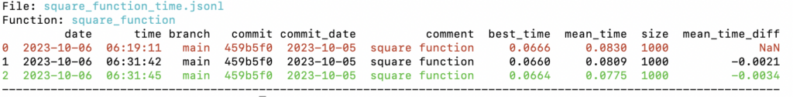
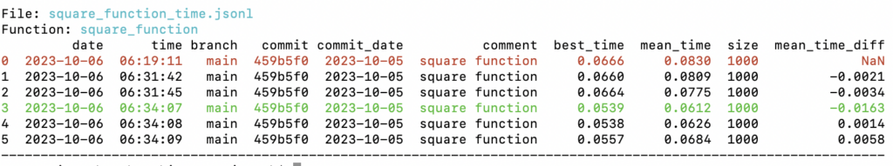

Benchmark Python With benchmarkit
You can use the benchmarkit library to keep track of the performance of functions over time.
In this tutorial, you will discover how to use the benchmarkit library to keep track of the performance of Python functions.
Let's get started.
What is benchmarkit
The project benchmarkit is a Python library for benchmarking.
It was developed by Vitaliy and is available as open source on GitHub.
Benchmark and analyze functions' time execution and results over the course of development
-- benchmarkit, GitHub.
It is an interesting approach to benchmarking.
It allows a function to be decorated, benchmarked, and the benchmark results saved.
We can then re-run the benchmark often, such as part of a continuity integration system, and keep track of how the performance of the function might change over time.
This is helpful if we are optimizing a program or functions over time and want to know what changed and what the effect was on performance.
No boilerplate code
-- benchmarkit, GitHub.
Saves history and additional info
Saves function output and parameters to benchmark data science tasks
Easy to analyze results
Disables garbage collector during benchmarking
The results keep track of the date time, execution time, and the commit associated with the change.
This allows us to track back what change was made and when in order to understand how the performance of a target function changes over the course of a development project.
Now that we know about benchmarkit, let's look at how we might use it.
How to Use benchmarkit
There are 3 steps to using benchmarkit, they are:
- Install benchmarkit
- Add decorators and configure benchmarkit
- Review benchmarkit results
Let's take a closer look at each in turn.
1. Install benchmarkit
Firstly, we must install the benchmarkit library.
This can be achieved using our preferred package manager, such as pip.
For example:
pip install benchmarkitAt the time of writing this fails with an error.
It might be a conflict with pandas, as described here:
Thankfully, there is a fix by stephematician who has an updated version of the library that can be installed.
For example:
pip3 install git+https://github.com/stephematician/benchmarkit.git2. Add Decorators and Configure benchmarkit
The next step is to add a decorator to each function to be benchmarked.
The decorator is called benchmarkit.benchmark.
It takes the number of iterations to execute the target function, whether the arguments to the function are to be saved, and whether output from the function should be saved.
For example:
...
from benchmarkit import benchmark
...
@benchmark(num_iters=100, save_params=True, save_output=False)
def somefunction():
...
It seems that the target function must take no arguments or must have default arguments so that it can be called directly from the benchmarking framework
Once the function/s has been decorated, we must configure the benchmarking.
This is achieved via the benchmarkit.benchmark_run() function.
It takes a list of functions to benchmark, a target path for saving results, comments to appear in the results, and other details.
For example:
...
# run the benchmark
results = benchmark_run(
,
'./results.jsonl',
comment='some function',
rows_limit=10,
extra_fields=None,
metric='mean_time',
bigger_is_better=False)
For a description of these arguments, see the project documentation.
3. Review benchmarkit Results
The program can be run directly or run from the command line.
The command line is preferred because each time the program is run, it produces a table of results to which the latest benchmark results are added.
The results keep track of the date/time of the benchmark, the benchmark time, and the difference compared to the best. It also keeps track of the git commit, so we can see when a change was introduced.
All results are presented together in one table highlighting the lowest time in green and the longest time in red.
The color coding means that they look best on the console output.
Now that we know how to use the benchmarkit library for benchmarking, let's look at a worked example.
Example of Benchmarking with benchmarkit
We can explore how to use the benchmarkit library with a worked example.
In this case, we will define a function that calculates a list of squared numbers.
# create a list of squared integers
def square_function(size=1000):
data = [i**2 for i in range(size)]
We can then add the decorator so that it is benchmarked.
In this case, we will run the function 10 times and save the parameters.
# create a list of squared integers
@benchmark(num_iters=10, save_params=True, save_output=False)
def square_function(size=1000):
data = [i**2 for i in range(size)]
Finally, we can configure the benchmark_run() function to benchmark our square_function() function and store the results in the ./square_function_time.jsonl file.
...
# run the benchmark
results = benchmark_run(
,
'./square_function_time.jsonl',
comment='square function',
rows_limit=10,
extra_fields=['size'],
metric='mean_time',
bigger_is_better=False)
Tying this together, the complete example is listed below.
# SuperFastPython.com
# example of benchmarking a square function with benchmarkit
from benchmarkit import benchmark
from benchmarkit import benchmark_run
# create a list of squared integers
@benchmark(num_iters=10, save_params=True, save_output=False)
def square_function(size=1000):
data = [i**2 for i in range(size)]
# run the benchmark
results = benchmark_run(
,
'./square_function_time.jsonl',
comment='square function',
rows_limit=10,
extra_fields=['size'],
metric='mean_time',
bigger_is_better=False)
We can then run the example from the command line.
In fact, we can run it a few times and review the results.
File: square_function_time.jsonl
Function: square_function
date time branch commit commit_date comment best_time mean_time size mean_time_diff
0 2023-10-06 06:19:11 main 459b5f0 2023-10-05 square function 0.0666 0.0830 1000 NaN
1 2023-10-06 06:31:42 main 459b5f0 2023-10-05 square function 0.0660 0.0809 1000 -0.0021
2 2023-10-06 06:31:45 main 459b5f0 2023-10-05 square function 0.0664 0.0775 1000 -0.0034
----------------------------------------------------------------------------------------------------------------
The screenshot below shows the color coding of the results.

We can see that the target function completes in about 0.080 seconds (80 milliseconds).
Next, we can change our square_function() function so that it is more efficient.
Instead of using the power operator (**) we will use multiplication (i*i).
For example:
# create a list of squared integers
@benchmark(num_iters=10, save_params=True, save_output=False)
def square_function(size=1000):
data = [i*i for i in range(size)]
We can then re-run the benchmarkit a few more times.
File: square_function_time.jsonl
Function: square_function
date time branch commit commit_date comment best_time mean_time size mean_time_diff
0 2023-10-06 06:19:11 main 459b5f0 2023-10-05 square function 0.0666 0.0830 1000 NaN
1 2023-10-06 06:31:42 main 459b5f0 2023-10-05 square function 0.0660 0.0809 1000 -0.0021
2 2023-10-06 06:31:45 main 459b5f0 2023-10-05 square function 0.0664 0.0775 1000 -0.0034
3 2023-10-06 06:34:07 main 459b5f0 2023-10-05 square function 0.0539 0.0612 1000 -0.0163
4 2023-10-06 06:34:08 main 459b5f0 2023-10-05 square function 0.0538 0.0626 1000 0.0014
5 2023-10-06 06:34:09 main 459b5f0 2023-10-05 square function 0.0557 0.0684 1000 0.0058
----------------------------------------------------------------------------------------------------------------
The screenshot below shows the color coding of the results.

We can see that after the change, the function is much faster, taking an average of 0.060 seconds (60 milliseconds) to complete.
The table shows results each time the function was benchmarked ordered by time. The commit is the same for all examples, but we can imagine a different commit at the time the code was changed so that we could track it back to the specific change that resulted in better performance.
This highlights how we can use the benchmarkit library to keep track of the execution time performance of a function over time.
Takeaways
You now know how to use the benchmarkit library to keep track of the performance of Python functions.
If you enjoyed this tutorial, you will love my book: Python Benchmarking. It covers everything you need to master the topic with hands-on examples and clear explanations.